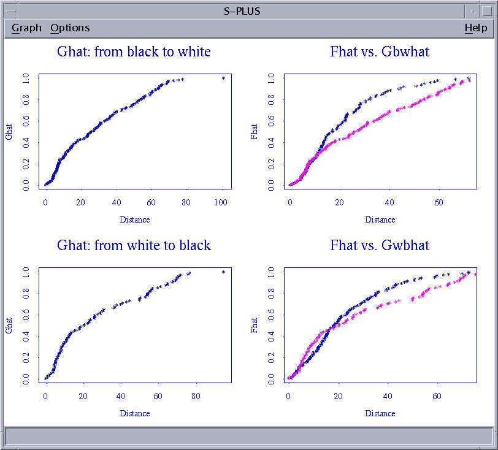
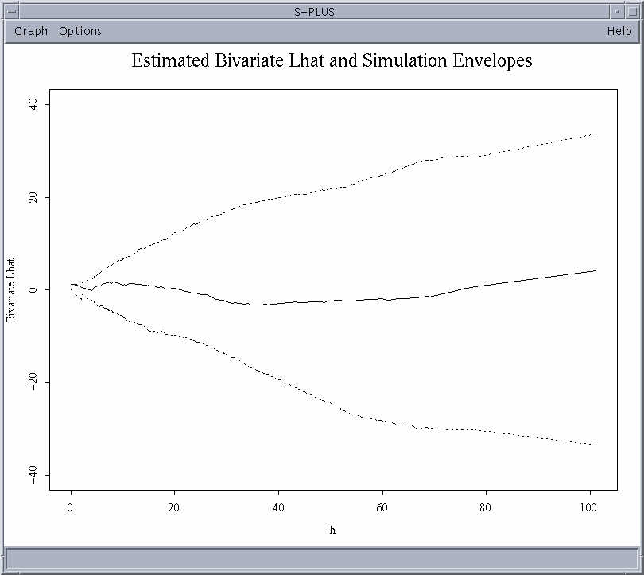

Group 1: Analysis of Multiple
Types of Events
For information on how to extract the data, click
here
INTRODUCTION
Here we present an example of analyzing a dataset that has two or more
different types of 'events'. In this situation, we are interested in assessing
the
relationship between the patterns of the types of events, and in particular,
whether they are independent.
For the example we have used the dataset presented in Bailey and Gatrell
(see section 4.2; Analysis of Multiple Types of Events) regarding the locations
of
property theft offenses perpetrated by white and black people in Oklahoma
City in the late 1970s. Thus, the different types of events here are the
offenses
committed by white people and those committed by black people.
The analyses that we present will help us determine whether white offenses and black offenses exhibit different spatial patterns and whether these patterns are related (i.e. dependent on each other) in any way. It is possible to imagine that the patterns may in fact be non-independent. The different types of events may be negatively correlated (ie. they exhibit repulsion) if, for example, whites and black residences are negatively correlated and the offenders commit crime close to home. Conversely, the events may be positively correlated (i.e.. they show attraction) if certain areas of the town are 'attractive' to thieves and thus both black and white thieves commit their crimes in similar areas.VISUAL DISPLAY OF DATA
We first plotted the data to visually examine the distributions for patterns:
POSITIONS OF BLACK AND WHITE OFFENSES
Black offenses = red circles
White offenses = yellow circles
BASIC ANALYSES: CHI SQUARE
It is possible to test for independence between the spatial distribution
of two different types of events by determining whether each event occurred
or did not
occur in each of a number of grids placed randomly or regularly over the
region. This 'presence-absence' information can then be presented in a
table as such:
Black offenses
Absence Presence
________________________
|
|
|
Absence
| c11
| c12
|
|
|
|
White offenses
|____________ |___________|
|
|
|
Presence
| c21
| c22
|
|
|
|
| ____________|___________|
We could then test this distribution against a chi-square distribution
using the standard chi-square statistic. This test is inferior to other
approaches in that
it does not effectively use the data. It is easy to see that by using only
presence/absence of offenses in the quadrats, we are losing data on the
intensity or
number of counts per quadrat. In addition, the size of the quadrat chosen
can influence the analysis.
To see the code you would use to analyze the data with a chi-square test,
go to the Chi-square code page.
MORE POWERFUL ANALYSES
Due to the problems with the chi-square analysis, we went on to use some more powerful tools.
When assessing multivariate data, the use of a set of nearest neighbor distribution functions (Gij(h)) can be illuminating. Gij(h) is the probability that the distance from a randomly chosen type i event (e.g. white offenses) to the nearest event of type j (e.g. black offenses) is less than or equal to h; h is the distance between a randomly chosen white crime (type i) event to the nearest black crime (type j) event. If the distributions of our two event types are independent, then the distribution of nearest neighbor distances to events of type j from an origin of measurement should be the same. Thus, we can compare our Gij(h) to Fj(h), where Fj(h) is the probability that the distance from a randomly chosen point to the nearest event of type j is less than or equal to h. This is done by plotting both Gij(h) and Fj(h) on the same plot against h. A similar line for each estimated distribution will indicate independence between our events types, whereas variations between the distributions will indicate non-independence.
F-HAT AND G-HAT ANALYSIS
Start Splus
library(splancs, first = T)
bkpts1 <- matrix(scan("/home/ssa9/stats/project1/blackdata"),147,5,byrow = T)BIVARIATE LHAT AND SIMULATION ENVELOPES
bkpts1[1,]bkptsx <- bkpts1[,2]
bkptsy <- bkpts1[,3]
blkpts <- as.points(bkptsx, bkptsy)whpts1 <- matrix(scan("/home/ssa9/stats/project1/whitedata"),104,5,byrow = T)
whpts1[1,]whptsx <- whpts1[,2]
whptsy <- whpts1[,3]
whtpts <- as.points(whptsx, whptsy)Description for the program 'findngh':
The program takes each row of obj1 and adds it as the first row to the matrix that otherwise contains obj2.
It then computes the distances between the points in the matrix using the 'dist' function. Since we are interested only in the distances from the first
row(containing x,y of obj1) to the other points, we filter the first 'nrow(obj2)' distances and compute the shortest distance using the 'min' function.
The result is added to a vector.findngh <- function(obj1,obj2)
{
count <- 0
for (i in 1:nrow(obj1))
{
xyb <- obj1[i,]xy <- c(xyb[1], obj2[,1], xyb[2], obj2[,2])
xymat <- matrix(xy, nrow(obj2) + 1, 2)
if (count == 0)
{
smalldist <- min(dist(xymat)[1:nrow(obj2)])
count <- 1
}
else
smalldist <- c(smalldist, min(dist(xymat)[1:nrow(obj2)]))}
return(smalldist)
}
g12hat <- function(obj1,obj2,dist.ghat = all.dists)
{
all.dists <- findngh(obj1,obj2)
all.dists <- sort(all.dists)
n <- length(all.dists)
ghat <- 1:n
ghat <- ghat/n
plot(dist.ghat, ghat, xlab = "Distance", ylab = "Ghat")
return(cbind(dist = dist.ghat, Ghat = ghat))
}
par(mfrow = c(2,2))
gbw <- g12hat(blkpts,whtpts)
title ("Ghat: from black to white")fw <- Fhat(whtpts)
pointmap(gbw, col = 3 , add = T)
## Points out of bounds X= 75.3923 Y= 0.986395
## Points out of bounds X= 77.8974 Y= 0.993197
## Points out of bounds X= 101.1385 Y= 1
## Warning messages:
## pointmap: plot type not square in: pointmap(gbw, col = 3, add = T)
title("Fhat vs. Gbwhat")
gwb <- g12hat(whtpts,blkpts)
title ("Ghat: from white to black")fb <- Fhat (blkpts)
pointmap (gwb, col = 3, add = T)
## Points out of bounds X= 76.5506 Y= 0.990385
## Points out of bounds X= 94.8472 Y= 1
## Warning messages:
## pointmap: plot type not square in: pointmap(gwb, col = 3, add = T)
title ("Fhat vs. Gwbhat")
The output of this analysis should be:

THE CODE:
For a dataset based on spatial locations, analyses based on the K function can be more powerful than using an analysis based on nearest neighbor distances. This is because the L-hat plots (derived from K functions) i) show black and white crime patterns considered separately and how they depart from spatial randomness, and ii) show the tendency for black and white crimes to occur together (attraction- positive peaks in the plot), or further apart (repulsion- negative troughs in the plot).Lets look briefly at the cross- K function:
Since Kii(h) = univariate K function for white crime (i), and
Kjj(h) = univariate K function for black crime (j),
then Kij(h) = the cross K function
When used for analyses, we can see that
Lamba(j) * Kij(h) = E (# of black crimes less than some distance (h) from a white crime), where Lamba(j) = intensity of black crime.
Under independence,
Kij(h) will equal pi(h2)
But, if white and black crimes are further apart (i.e. negative correlation or repulsion), then Kij(h) will be less than pi(h2) and
if white and black crimes are close (i.e. positive correlation or attraction), then Kij(h) will be greater than pi(h2)Simulation envelopes are used to demonstrate how the K-hat function departs from its theoretical value. K-hat is an estimate of Kij(h). As the relationship between the two patterns is not affected by the spatial randomness of either, we do not compare the distributions to a CSR pattern. Instead, simulation of the entire point pattern can be done by randomly shifting all of the black crimes relative to all of the white crimes.
CONCLUSIONS: what do you think? Then, click here for answers
The first command to enter is:library(splancs, first = T)
We use "first = T" so that if the Splus Spatial Module is already loaded, Splancs
will be accessed first. This is necessary in this case because both the Splus Spatial
Module and Splancs have functions called "bbox" and if we don't specify that Splancs
must be loaded first, it will use the Splus Spatial Module version of bbox when we
really want the Splancs version.Next, we load the data into three different matrices, one with black data, one with white
data, and one with both data sets together. These are simple Splus functions.white1 _ matrix(scan('/home/ssa5/project1/whitepts'),104,5,byrow=T)
black1 _ matrix(scan('/home/ssa5/project1/blackpts.dat'),147,5,byrow=T)
alldata _ matrix(scan('/home/ssa5/project1/alldata'),251,5,byrow=T)Then we need to get the data into data structures that Splancs can use, primarily points
data sets and a polygon data set. Polypts is the bounding box for the two data sets together.
Hvector is the vector if nearest neighbor distances between points in the two data sets, and
sort sorts them into ascending order.whitepts _ as.points(white1[,2],white1[,3])
blackpts _ as.points(black1[,2],black1[,3])
polypts _ bbox(as.points(alldata[,2],alldata[,3]))
hvector _ sort(nndistF(whitepts,blackpts))Next we calculate the cross-k with an Splancs function and the bivariate Lhat.
kvector _ k12hat(whitepts,blackpts,polypts,hvector)
lvector _ sqrt(kvector/pi)-hvectorWe then calculate the simulation envelopes with a toroidal shift using another Splancs function.
This was done with 20 simulations. Upper and lower are the upper and lower bounds of the
simulation envelope for the bivariate Lhat.K12env _ Kenv.tor(whitepts,blackpts,polypts,20,hvector)
upper _ sqrt(K12env$upper/pi)-hvector
lower _ sqrt(K12env$lower/pi)-hvectorPlot the estimated bivariate Lhat and the simulation envelope.
plot(hvector,lvector,type="l",ylim=c(-40,40),xlab="h",ylab="Bivariate Lhat")
lines(hvector,upper,type="l",lty=2)
lines(hvector,lower,type="l",lty=2)
title(main="Estimated Bivariate Lhat and Simulation Envelopes")Splancs functions used:
as.points
nndistF
k12hat
Kenv.tor
Thus, we get:

What about edge effects? Edge effects should be
considered in analyses such as the ones presented. Due to time considerations,
we have not discussed them in class in detail, but click here for information
regarding
edge effects.